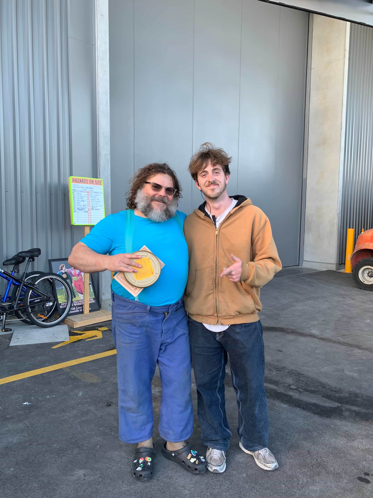

A Minecraft Movie (2025)
← BackI worked as the Special Effects Runner/On-Set Assistant as part of the Minecraft feature film. My role was to assist the special effects team in building their many different rigs for the film, helping with sourcing all materials needed as well as being an on-set assistant for the team during the filming of the movie.
It was a fast paced and dynamic role that was both on-set and off-set.


password: onway